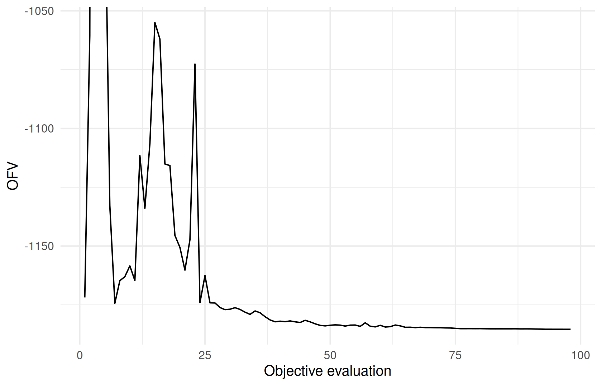

DATA → MODEL → ESTIMATE ⇄ EVALUATE → SIMULATE → REPORT
Initial estimates and a first fit
Where you are
The dataset is checked (Preparing and checking the analysis dataset) and the base model is written and validated (Writing and managing model files). This chapter produces the first fit. It covers where starting values come from, how to fit, what the fit object contains, and how to read the warnings ferx attaches to it. Choosing and tuning estimation methods follows in Estimation methods and controlling the fit.
The data
The base model and its dataset from the previous chapters:
base <- ferx_example("two_cpt_oral_base")Starting values
From the model file
Every theta, omega and sigma in [parameters] carries an initial value. For thetas it is the first number in theta NAME(initial, lower, upper):
init_lines <- ferx_model_get_section(base$model, "parameters")
#> # [parameters]
#> theta TVCL(5.0, 0.1, 100.0)
#> theta TVV1(50.0, 1.0, 500.0)
#> theta TVQ(10.0, 0.1, 100.0)
#> theta TVV2(100.0, 1.0, 500.0)
#> theta TVKA(1.2, 0.01, 10.0)
#>
#> omega ETA_CL ~ 0.10
#> omega ETA_V1 ~ 0.10
#> omega ETA_Q ~ 0.05
#> omega ETA_V2 ~ 0.05
#> omega ETA_KA ~ 0.15
#>
#> sigma PROP_ERR ~ 0.02 (sd)From the data: NCA-based starting values
ferx_inits_from_nca() derives starting values from the data using non-compartmental analysis (NCA). It returns them for inspection without fitting. The method is "nca_sweep" (default), "nca" or "nca_ebe". They differ in how much refinement runs on top of the NCA estimates; ?ferx_inits_from_nca describes each.
nca <- ferx_inits_from_nca(base$model, base$data)
nca
#> <ferx_inits> NCA-based starting values (method = nca_sweep)
#>
#> Theta:
#> TVCL TVV1 TVQ TVV2 TVKA
#> 4.3455257 73.0446185 7.2446104 69.1928716 0.2372377
#>
#> Omega:
#> ETA_CL ETA_V1 ETA_Q ETA_V2 ETA_KA
#> ETA_CL 0.1029478 0.0 0.00 0.00 0.00
#> ETA_V1 0.0000000 0.1 0.00 0.00 0.00
#> ETA_Q 0.0000000 0.0 0.05 0.00 0.00
#> ETA_V2 0.0000000 0.0 0.00 0.05 0.00
#> ETA_KA 0.0000000 0.0 0.00 0.00 0.15
#>
#> 1 note(s):
#> - inits_from_nca: 27/30 subjects had a valid AUC estimate; others excluded from NCA poolingThe result is a ferx_inits object, and print() shows the suggested thetas, the omega matrix and any notes. On this dataset all three methods return the same thetas:
To fit from these values directly, pass inits_from_nca to ferx_fit(): TRUE, or one of the method names. The same option exists as the inits_from_nca key in [fit_options] or settings. The Variants section below shows that this is not always an improvement.
A pilot run
ferx_check_init() runs a short pilot fit with the optimizer trace switched on. It returns the fit, the trace (one row per objective evaluation) and a one-row summary:
pilot <- ferx_check_init(base$model, base$data)
#> Warning: Model file [fit_options] sets `covariance = true` but ferx_fit()
#> argument overrides it with `false`. The call-time value will be used.
#> Warning: Model file [fit_options] sets `maxiter = 500` but ferx_fit() argument
#> overrides it with `5`. The call-time value will be used.
pilot$summary
#> n_iter ofv_start ofv_end ofv_drop converged
#> 1 98 -1171.882 -1185.403 13.52042 TRUEThe two R warnings come from ferx_check_init() itself. It overrides covariance and maxiter from the model file, and ferx reports every such override. A falling objective function value (OFV) shows that the optimizer moves away from the starting values in a useful direction. On this model the pilot already reached convergence. The trace shows the path:
ggplot(pilot$trace, aes(iter, ofv)) +
geom_line() +
coord_cartesian(ylim = range(pilot$trace$ofv[pilot$trace$iter > 10])) +
labs(x = "Objective evaluation", y = "OFV")
Minimal runnable call
fit <- ferx_fit(base$model, base$data, verbose = FALSE)
fit
#> ============================================================
#> NONLINEAR MIXED EFFECTS MODEL ESTIMATION
#> ============================================================
#> Model: two_cpt_oral_base Dataset: two_cpt_oral_cov
#> Method: FOCEI | Gradient: FD | Subjects: 30 | Obs: 300
#>
#> STATUS: CONVERGED 98 iterations 0.9s
#> OFV: -1185.4028 AIC: -1163.4028 BIC: -1122.6612
#>
#> MODEL STRUCTURE (auto-derived)
#> ------------------------------------------------------------
#> Structural: 2-cpt oral (TVCL, TVV1, TVQ, TVV2, TVKA)
#> IIV: ETA_CL, ETA_V1, ETA_Q, ETA_V2, ETA_KA
#> IOV: none
#> Residual: proportional
#>
#> THETA
#> ------------------------------------------------------------
#> Parameter Estimate SE %RSE
#> ----------------------------------------------------
#> TVCL 4.464758 0.321684 7.2
#> TVV1 48.242245 3.102664 6.4
#> TVQ 9.584246 0.412960 4.3
#> TVV2 93.787739 3.432550 3.7
#> TVKA 1.247467 0.097536 7.8
#>
#> OMEGA (between-subject variability)
#> ------------------------------------------------------------
#> ETA_CL [log-normal] = 0.155125 CV% = 41.0 SE = 0.040176
#> ETA_V1 [log-normal] = 0.119905 CV% = 35.7 SE = 0.032563
#> ETA_Q [log-normal] = 0.052574 CV% = 23.2 SE = 0.014448
#> ETA_V2 [log-normal] = 0.038457 CV% = 19.8 SE = 0.010511
#> ETA_KA [log-normal] = 0.175835 CV% = 43.8 SE = 0.048690
#>
#> SIGMA (residual error)
#> ------------------------------------------------------------
#> PROP_ERR [proportional] = 0.019620 (var = 0.000385, CV% = 2.0) SE = 0.001123 [initial specified as SD]
#>
#> SHRINKAGE
#> ------------------------------------------------------------
#> ETA_CL: -0.2% ETA_V1: 3.6% ETA_Q: 2.9% ETA_V2: 2.4% ETA_KA: 4.2% EPS: 27.9%
#>
#> DIAGNOSTICS
#> ------------------------------------------------------------
#> Covariance: computed Cond: 1.2 DW: 2.91 [negative autocorrelation] IWRES lag-1 r: -0.532
#>
#> RUN INFO
#> ------------------------------------------------------------
#> Gradient (requested): fd (used: fd)
#> ferx v0.3.0 (core v0.4.0)
#>
#> SETTINGS (model file / call-time override)
#> ------------------------------------------------------------
#> method focei [model only]
#> maxiter 500 [model only]
#> covariance true [model only]
#> gradient fd [model only]
#>
#> ------------------------------------------------------------
#> 1 warning -- call ferx_get_warnings(fit) for details
#> ============================================================print() on the fit gives one screen with everything you need to judge it:
- Header: method, gradient, number of subjects and observations, convergence status and OFV/AIC/BIC.
- Model structure, as ferx derived it from the file.
- THETA, OMEGA and SIGMA estimates with standard errors. Omegas are variances; for log-normal etas the CV% is shown alongside.
- Shrinkage, the diagnostics line (covariance step, condition number, Durbin-Watson statistic of the residuals) and run information.
- Settings: every setting, and whether it came from the model file or the call.
- A warning count.
The fit used method = focei and gradient = fd from the model’s [fit_options], marked [model only].
Reading the result
summary()
summary() returns a ferx_summary object. Its print method shows run metadata and all warnings in one compact block, without the parameter tables:
summary(fit)
#> --------------------------------------------------
#> ferx NLME Fit Summary
#> --------------------------------------------------
#> Model: two_cpt_oral_base
#> Dataset: two_cpt_oral_cov
#> Converged: YES
#> Method: FOCEI
#> Gradient: fd (requested) -> fd (used)
#> ferx v0.3.0 (core v0.4.0)
#>
#> Settings (model file / call-time override):
#> method focei [model only]
#> maxiter 500 [model only]
#> covariance true [model only]
#> gradient fd [model only]
#>
#> Structure: 2-cpt oral (TVCL, TVV1, TVQ, TVV2, TVKA) | IIV: ETA_CL, ETA_V1, ETA_Q, ETA_V2, ETA_KA | IOV: none | Residual: proportional
#>
#> OFV: -1185.4028 AIC: -1163.4028 BIC: -1122.6612
#> Subjects: 30 Obs: 300 Params: 11 Iter: 98
#> Shrinkage: ETA1=-0.2% ETA2=3.6% ETA3=2.9% ETA4=2.4% ETA5=4.2%
#> EPS shrinkage: 27.9%
#> DW: 2.91 [negative autocorrelation]
#> lag-1 r: -0.532
#> Covariance: computed Cond: 1.2 | Wall time: 0.9s
#>
#> Warnings:
#> * Negative IWRES autocorrelation detected (Durbin-Watson = 2.91). Possible over-parameterization or misspecified error model.
#> * 19 EBE fallback(s)
#> --------------------------------------------------The last warning line, the number of EBE fallbacks, comes from fit$total_ebe_fallbacks (19 here). It is a run statistic rather than a structured fit warning, so ferx_get_warnings() below does not list it.
Parameter estimates
fit$estimates is the tidy table of all estimated parameters. The row names are the parameter names:
fit$estimates[, c("transform", "estimate", "se", "rse_pct", "lower_95", "upper_95")]
#> transform estimate se rse_pct lower_95
#> TVCL identity 4.46475758 0.321684435 7.204970 3.83425609
#> TVV1 identity 48.24224473 3.102664029 6.431425 42.16102324
#> TVQ identity 9.58424559 0.412959827 4.308736 8.77484433
#> TVV2 identity 93.78773933 3.432550369 3.659914 87.05994061
#> TVKA identity 1.24746711 0.097536293 7.818747 1.05629598
#> ETA_CL variance 0.15512485 0.040176467 25.899440 0.07637897
#> ETA_V1 variance 0.11990529 0.032563473 27.157662 0.05608088
#> ETA_Q variance 0.05257442 0.014448475 27.481947 0.02425541
#> ETA_V2 variance 0.03845706 0.010511095 27.332027 0.01785532
#> ETA_KA variance 0.17583463 0.048690437 27.691040 0.08040137
#> PROP_ERR proportional 0.01961999 0.001122791 5.722687 0.01741932
#> upper_95
#> TVCL 5.09525907
#> TVV1 54.32346623
#> TVQ 10.39364686
#> TVV2 100.51553806
#> TVKA 1.43863825
#> ETA_CL 0.23387072
#> ETA_V1 0.18372970
#> ETA_Q 0.08089343
#> ETA_V2 0.05905881
#> ETA_KA 0.27126789
#> PROP_ERR 0.02182066ferx_coef() and ferx_se() pull values by param name. Unlike indexing the table, a misspelt name is an error that suggests the closest match:
Parameter transformations and the transform column
A parameter is not always reported on the scale you want to read. The transform column of fit$estimates names the parameterisation the row came from, which is what you need in order to know whether estimate is the number you want:
transform |
estimate holds |
Which parameters |
|---|---|---|
identity |
the value itself | a theta written as TVCL * exp(ETA_CL)
|
log |
the log of the value | a theta written as exp(TVCL + ETA_CL)
|
logit |
the logit of the value | a theta written as inv_logit(THETA_F + ETA_F)
|
logit_probability |
the value itself, on (0, 1) | a theta declared on the (0, 1) scale and used as inv_logit(logit(THETA_F) + ETA_F)
|
variance |
a variance |
omega and kappa diagonals |
proportional |
a coefficient of variation on the fraction scale | a proportional sigma
|
additive |
a standard deviation, in the units the error model sees | an additive sigma
|
The first four are the transforms a fixed effect can carry, and fit$theta_transforms lists them for the thetas alone. Bounds do not appear here: this column reflects how the parameter is written in [individual_parameters], not the internal scale the optimizer packs it onto, and every bounded theta of this model reads identity:
fit$theta_transforms
#> TVCL TVV1 TVQ TVV2 TVKA
#> "identity" "identity" "identity" "identity" "identity"log and logit put estimate on the transformed scale and the interpretable value in estimate_natural, with lower_95_natural and upper_95_natural beside it. Those columns are NA for identity, variance, proportional and additive rows, which need no back-transform. logit_probability needs none either – the theta is declared on (0, 1) and the engine returns it there, so estimate is already the number you want and estimate_natural repeats it. The bioavailability example (Absorption and bioavailability) uses that form:
fit_logit <- ferx_fit(ferx_example("bioavailability")$model,
ferx_example("bioavailability")$data, verbose = FALSE)
fit_logit$estimates[, c("transform", "estimate", "lower_95", "estimate_natural", "lower_95_natural")]
#> transform estimate lower_95 estimate_natural
#> TVCL identity 5.71314425 2.27065256 NA
#> TVV identity 56.67240359 23.09324119 NA
#> TVKA identity 1.50009213 1.35597045 NA
#> THETA_F logit_probability 0.79235918 0.30527844 0.7923592
#> ETA_CL variance 0.06811478 0.02320218 NA
#> ETA_F variance 0.15663331 -0.53251792 NA
#> PROP_ERR proportional 0.12736042 0.10978296 NA
#> lower_95_natural
#> TVCL NA
#> TVV NA
#> TVKA NA
#> THETA_F 0.1650254
#> ETA_CL NA
#> ETA_F NA
#> PROP_ERR NATHETA_F is the typical bioavailability, 0.792. The model file declares it on that scale (theta THETA_F(0.70, 0.001, 0.999)), and the engine’s own individual parameters agree: reconstructing each subject’s F from estimate reproduces them exactly.
For a log theta the back-transform is real, and estimate_natural is exactly exp(estimate):
log_model <- file.path(book_tempdir("first-fit"), "log_theta.ferx")
writeLines(sub(" CL = TVCL * exp(ETA_CL)", " CL = exp(TVCL + ETA_CL)",
sub(" theta TVCL(0.134, 0.001, 10.0)", " theta TVCL(-2.0, -7.0, 2.3)",
readLines(ferx_example("warfarin")$model), fixed = TRUE),
fixed = TRUE), log_model)
fit_log <- ferx_fit(log_model, ferx_example("warfarin")$data, verbose = FALSE)
log_row <- fit_log$estimates["TVCL", ]
c(transform = log_row$transform,
difference = log_row$estimate_natural - exp(log_row$estimate))
#> transform difference
#> "log" "0"The two confidence intervals on a row are built differently. lower_95 and upper_95 are always the symmetric interval estimate ± 1.96 × se on the scale estimate is reported on. On a bounded parameter that interval is not held inside the bounds, so for a probability read it as a measure of precision rather than as limits. For a logit_probability theta, lower_95_natural and upper_95_natural are formed on the logit scale instead – the standard error is carried there by the delta method, se / (p (1 - p)), and the interval brought back with inv_logit() – so they cannot leave [0, 1], and reach its edge only for an estimate close to a bound with a large standard error:
fit_logit$estimates["THETA_F", c("estimate", "lower_95", "upper_95",
"lower_95_natural", "upper_95_natural")]
#> estimate lower_95 upper_95 lower_95_natural upper_95_natural
#> THETA_F 0.7923592 0.3052784 1.27944 0.1650254 0.9866093Here upper_95 is 1.279, a bioavailability above 1, while the natural-scale interval runs from 0.165 to 0.987; for a probability, quote that one. print() shows it on a (95% CI) line under the theta.
That interval is wide for a reason unrelated to how it is built: with oral data only, F, CL and V cannot be separated (Absorption and bioavailability), and the fit says so:
ferx_get_warnings(fit_logit, as_df = TRUE)[, c("category", "severity")]
#> category severity
#> 1 high_correlation warning
#> 2 condition_number criticalDeclaring the same bioavailability on a logit theta instead, in a separate fit, gives nearly the same natural-scale columns. The agreement is approximate – the delta method is a first-order approximation, and two fits stop at slightly different optima – and only the natural-scale columns are comparable: estimate, lower_95 and upper_95 are on different scales in the two rows.
logit_model <- file.path(book_tempdir("first-fit"), "bioavailability_logit.ferx")
bio_lines <- readLines(ferx_example("bioavailability")$model)
twin_lines <- sub("theta THETA_F(0.70, 0.001, 0.999) # typical bioavailability, directly on (0,1) scale",
"theta THETA_F(0.847, -5.0, 5.0) # typical bioavailability on the logit scale",
bio_lines, fixed = TRUE)
twin_lines <- sub("inv_logit(logit(THETA_F) + ETA_F)", "inv_logit(THETA_F + ETA_F)",
twin_lines, fixed = TRUE)
stopifnot(sum(twin_lines != bio_lines) == 2) # both lines really were rewritten
writeLines(twin_lines, logit_model)
fit_twin <- ferx_fit(logit_model, ferx_example("bioavailability")$data, verbose = FALSE)
natural <- c("transform", "estimate_natural", "lower_95_natural", "upper_95_natural")
natural_gap <- max(abs(unlist(fit_logit$estimates["THETA_F", natural[-1]]) -
unlist(fit_twin$estimates["THETA_F", natural[-1]])))
rbind(declared_on_0_1 = fit_logit$estimates["THETA_F", natural],
declared_as_logit = fit_twin$estimates["THETA_F", natural])
#> transform estimate_natural lower_95_natural
#> declared_on_0_1 logit_probability 0.7923592 0.1650254
#> declared_as_logit logit 0.7923566 0.1654716
#> upper_95_natural
#> declared_on_0_1 0.9866093
#> declared_as_logit 0.9865661The largest difference between the two rows’ natural-scale columns is 0.00045.
For the random effects, fit$eta_param_types says how each eta enters the model – log_normal, additive, logit, logit_probability or custom:
fit$eta_log_transformed is a narrower flag and not a substitute: it is TRUE only for the TVCL * exp(ETA_CL) form, so an eta written exp(TVCL + ETA_CL) is log-normal and still reads FALSE.
Nothing here converts for you. An omega row is a variance, so a between-subject CV% is yours to compute (Tables and figures), and a log-transform-both-sides model reports an additive sigma on the log scale rather than in the units of DV (Variability: random effects, residual error and IOV).
The fit object
A fit is a named list with 109 elements. These are the ones you will use most:
| What you want | Where |
|---|---|
| Parameter table | fit$estimates |
Residuals, PRED, IPRED per observation |
fit$sdtab (Diagnosing the model) |
| Individual parameters per subject | fit$individual_estimates |
| Random effects per subject | fit$ebe_etas |
| OFV, AIC, BIC, convergence |
fit$ofv, fit$aic, fit$bic, fit$converged
|
| Shrinkage |
fit$shrinkage_eta, fit$shrinkage_eps
|
| Parameter correlations | fit$cor_matrix |
head(fit$individual_estimates)
#> ID CL V1 Q V2 KA
#> 1 1 4.361100 42.73915 11.328502 88.82908 2.2309504
#> 2 2 5.971974 60.77905 12.027252 85.12710 3.3378917
#> 3 3 4.943563 50.09243 8.064386 68.61452 1.2038166
#> 4 4 3.057613 21.53132 7.877632 86.96907 0.9459055
#> 5 5 5.822952 39.95172 11.235375 65.71344 1.2051688
#> 6 6 7.726836 45.63701 8.423314 113.38803 1.4900726?ferx_fit documents every element. Function, option and example index lists them all with the chapter that uses each one.
Warnings
ferx classifies everything it notices during a fit. Each warning has a severity and a stable category token:
| Severity | Meaning |
|---|---|
| critical | The result cannot be trusted as it is (for example no convergence or an ill-conditioned covariance) |
| warning | The result stands, but a caveat applies |
| info | A note; no action needed |
ferx_get_warnings() prints them grouped by severity. With as_df = TRUE it returns a data frame you can filter:
ferx_get_warnings(fit)
#> ferx fit warnings (two_cpt_oral_base)
#> -------------------------------------------------
#> [WARNING] dw_autocorrelation
#> Negative IWRES autocorrelation detected (Durbin-Watson = 2.91).
#> Possible over-parameterization or misspecified error model.
#> Negative IWRES autocorrelation suggests over-parameterisation or a
#> misspecified error model. Consider removing a parameter or
#> simplifying the residual model.
#>
#> -------------------------------------------------
#> 0 CRITICAL 1 WARNING 0 INFO
ferx_get_warnings(fit, as_df = TRUE)[, c("severity", "category")]
#> severity category
#> 1 warning dw_autocorrelationfit$warnings holds the same messages as plain text. Because the category tokens are stable, scripts can branch on them. For example, reject any fit with a critical warning. check_diagnostics() returns the residual autocorrelation and shrinkage behind two common warnings as data frames:
check_diagnostics(fit)
#> $autocorrelation
#> dw_statistic lag1_r flag
#> 1 2.909623 -0.5317191 negative autocorrelation
#>
#> $shrinkage
#> param type shrinkage shrinkage_pct
#> 1 ETA_CL eta -0.001744168 -0.1744168
#> 2 ETA_V1 eta 0.036475626 3.6475626
#> 3 ETA_Q eta 0.029265476 2.9265476
#> 4 ETA_V2 eta 0.024072075 2.4072075
#> 5 ETA_KA eta 0.041527717 4.1527717
#> 6 PROP_ERR eps 0.278869975 27.8869975What these diagnostics mean and how to act on them is the subject of Diagnosing the model.
Options that matter
Arguments of ferx_fit() introduced here. A call-time value always overrides the model file’s [fit_options], and ferx reports the override:
| Argument | Default | Meaning |
|---|---|---|
model |
— | Model file or ferx_model object |
data |
NULL |
Dataset; NULL uses the ferx_model object’s data or the model’s [data] block |
method |
NULL |
Estimation method(s); NULL uses the model file, otherwise "focei" (Estimation methods and controlling the fit) |
covariance |
NULL |
Run the covariance step (standard errors); NULL uses the model file, which defaults to TRUE
|
verbose |
NULL |
Print progress; NULL uses the model file, which defaults to TRUE
|
inits_from_nca |
FALSE |
Replace starting values with NCA-based ones (TRUE or a method name) |
The other ferx_fit() arguments are covered where they matter: threads, gradient, optimizer_trace and settings in Estimation methods and controlling the fit; ignore, accept and ignore_ids in Preparing and checking the analysis dataset; bloq_method in Censored observations (BLOQ); mu_referencing and scale_params in Variability: random effects, residual error and IOV; sir and fd_hessian_step in Parameter uncertainty; output and include_data in Reproducibility and sharing.
For example, skipping the covariance step:
fit_nocov <- ferx_fit(base$model, base$data, covariance = FALSE, verbose = FALSE)
#> Warning: Model file [fit_options] sets `covariance = true` but ferx_fit()
#> argument overrides it with `false`. The call-time value will be used.
fit_nocov$covariance_status
#> [1] "not_requested"
head(fit_nocov$estimates[, c("estimate", "se")], 3)
#> estimate se
#> TVCL 4.464758 NA
#> TVV1 48.242245 NA
#> TVQ 9.584246 NA| Function | Arguments |
|---|---|
ferx_inits_from_nca() |
model, data, method ("nca_sweep", "nca", "nca_ebe") |
ferx_check_init() |
model, data, method (default "focei"), maxiter (pilot iteration limit), further arguments passed to ferx_fit()
|
ferx_coef(), ferx_se()
|
fit, param (names; NULL for all) |
ferx_get_warnings() |
fit, as_df
|
check_diagnostics() |
fit |
Variants
Starting from NCA-based values
Fit the base model three ways: from the model file’s starting values, from NCA-based starting values, and from NCA-based values with gradient = "auto" instead of the model file’s finite differences:
fit_nca <- ferx_fit(base$model, base$data, inits_from_nca = TRUE, verbose = FALSE)
fit_nca_auto <- ferx_fit(base$model, base$data, inits_from_nca = TRUE, gradient = "auto",
verbose = FALSE)
#> Warning: Model file [fit_options] sets `gradient = fd` but ferx_fit() argument
#> overrides it with `auto`. The call-time value will be used.
worst <- function(f) {
sev <- ferx_get_warnings(f, as_df = TRUE)$severity
if ("critical" %in% sev) "critical" else if ("warning" %in% sev) "warning" else "none"
}
data.frame(
start = c("model file", "NCA", "NCA, gradient = auto"),
converged = c(fit$converged, fit_nca$converged, fit_nca_auto$converged),
ofv = c(fit$ofv, fit_nca$ofv, fit_nca_auto$ofv),
worst_warning = c(worst(fit), worst(fit_nca), worst(fit_nca_auto))
)
#> start converged ofv worst_warning
#> 1 model file TRUE -1185.403 warning
#> 2 NCA TRUE 6265.497 critical
#> 3 NCA, gradient = auto TRUE -1185.462 warningAll three report converged = TRUE (with gradient = "auto", ferx used the analytic gradient). The NCA start with finite differences, however, ended at an OFV about 7451 points higher than the other two, with a critical warning. Its warnings show why the result cannot be trusted:
ferx_get_warnings(fit_nca, as_df = TRUE)[, c("severity", "category")]
#> severity category
#> 1 warning general
#> 2 warning covariance_regularized
#> 3 warning eps_shrinkage
#> 4 warning inflated_rse
#> 5 warning dw_autocorrelation
#> 6 critical condition_number
#> 7 warning eta_normalityThe NCA-based absorption rate constant (TVKA = 0.237) is far from the estimate of the successful fits (1.247). Convergence only means the optimizer stopped. Always compare the OFV and read the warnings before accepting a fit.
Pitfalls
A fit stopped by its iteration limit. maxiter limits the outer optimizer iterations. A fit that hits the limit is marked unconverged with a critical convergence warning. For the warfarin example with method = "focei":
warf <- ferx_example("warfarin")
fit_short <- ferx_fit(warf$model, warf$data, method = "focei",
settings = list(maxiter = 5), verbose = FALSE)
#> Warning: Model file [fit_options] sets `method = foce` but ferx_fit() argument
#> overrides it with `focei`. The call-time value will be used.
#> Warning: Model file [fit_options] sets `maxiter = 300` but ferx_fit() argument
#> overrides it with `5`. The call-time value will be used.
fit_short$converged
#> [1] TRUE
ferx_get_warnings(fit_short, as_df = TRUE)[, c("severity", "category", "message")]
#> severity category
#> 1 warning dw_autocorrelation
#> message
#> 1 Negative IWRES autocorrelation detected (Durbin-Watson = 2.61). Possible over-parameterization or misspecified error model.Other points:
-
n_iterationsand the rows of the optimizer trace count objective evaluations, not outer iterations, so they can be much larger thanmaxiter. - Reading
fit$estimates["NAME", ]with a misspelt name silently returnsNA.ferx_coef()andferx_se()stop with an error instead.
Warnings you may see here
-
convergence(critical): the optimizer did not converge. Reject the fit, then change starting values, method or bounds and refit. See convergence and covariance warnings. -
general(warning): the fallback category for messages not assigned to a specific code. Examples in this book are notes from NCA starting values, the location of an optimizer trace file, a stopped fit, and a misspelt data-selection column (Preparing and checking the analysis dataset). Read the message. See solver, numerics and unclassified warnings.
Summary
- Starting values come from
[parameters].ferx_inits_from_nca()proposes data-based ones, andferx_check_init()runs a pilot. -
ferx_fit(model, data)fits.print()andsummary()show the result, andfit$estimates,ferx_coef()andferx_se()give the numbers. - Judge a fit by convergence, OFV and warnings.
ferx_get_warnings(as_df = TRUE)makes them scriptable.
Next: Estimation methods and controlling the fit chooses and tunes the estimation method.
TipReference
- R help:
?ferx_fit,?summary.ferx_fit,?ferx_inits_from_nca,?ferx_check_init,?ferx_coef,?ferx_get_warnings,?check_diagnostics - ferx-core: fit options, warnings